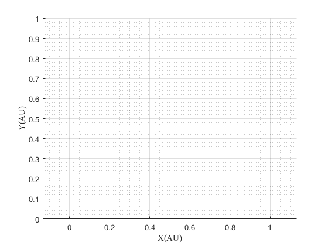
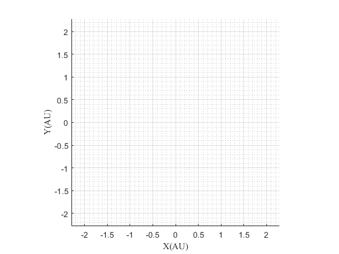
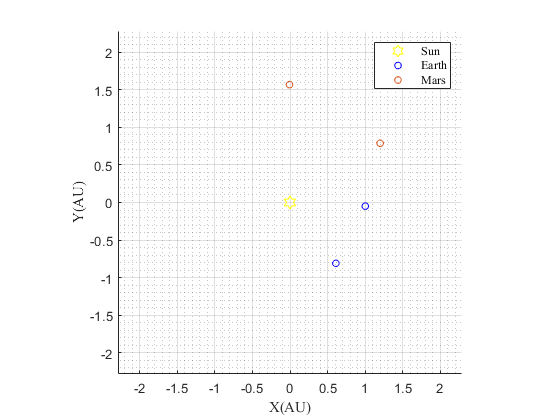

Contents
planet1='Earth'; planet2='Mars';
[units,constant]=unitsandconstants();
[planetdatadeparture]=setPlanetDatabase(planet1);
[planetdataarrival]=setPlanetDatabase(planet2);
InitialPosE=[1.500618612835749e+11;-7.304103448983006e+09;-1.150284102099482e+06];
InitialPosE2=[9.144600620735362e+10;-1.212565581477094e+11;4.548784574574002e+06];
InitialPosM=[1.796920319089222e+11;1.181325170103725e+11;-1.936700567138306e+09];
InitialPosM2=[-9.628144018811493e+08;2.348590452563646e+11;4.946057385219960e+09];
InitialVelE=[9.634664282355470e+02;2.964156149999659e+04;-1.349696427441281];
InitialVelM= [-1.238494328872880e+04;2.231594693723536e+04;7.718498826795501e+02];
TransferPos1=[1.500618612835749e+11;-7.304103448983006e+09;-1.150284102099482e+06];
TransferPos2=[9.144600620735362e+10;-1.212565581477094e+11;4.548784574574002e+06];
TransferVel1=[1.640184610732615e+04;3.380386628373996e+04;-5.279241938816727e+02];
TransferVel2=[2.672992453413431e+04;1.895687745405791e+04;1.153260133910515e+03];
TransferFinalPos1=InitialPosM;
TransferFinalPos2=InitialPosM2;
dt=3600;
N=1000000;
plot
figure ('name','Interplanetary transfer')
hold on
axis equal
grid on
grid minor
xlabel('X(AU)','FontName','Times');
ylabel('Y(AU)','FontName','Times');
zlabel('Z(AU)','FontName','Times');

This section fixes the plot depending on the chosen planets.
if planetdatadeparture.aAU>planetdataarrival.aAU
half=planetdatadeparture.aAU/2;
xlim([-planetdatadeparture.aAU-half planetdatadeparture.aAU+half])
ylim([-planetdatadeparture.aAU-half planetdatadeparture.aAU+half])
zlim([-1 1])
elseif planetdataarrival.aAU>planetdatadeparture.aAU
half=planetdataarrival.aAU/2;
xlim([-planetdataarrival.aAU-half planetdataarrival.aAU+half])
ylim([-planetdataarrival.aAU-half planetdataarrival.aAU+half])
zlim([-1 1])
end

legend('location','northeast','FontName','Times')
plot3(0,0,0, 'hy', 'MarkerSize', 10,'DisplayName','Sun');
planetdotsE=[TransferPos1,TransferPos2];
planetdotsM=[TransferFinalPos1,TransferFinalPos2];
plot3(planetdotsE(1,:)/units.AU,planetdotsE(2,:)/units.AU,planetdotsE(3,:)/units.AU, 'o','MarkerSize', 5,'color',planetdatadeparture.color,'DisplayName',planet1)
plot3(planetdotsM(1,:)/units.AU,planetdotsM(2,:)/units.AU,planetdotsM(3,:)/units.AU, 'o','MarkerSize', 5,'color',planetdataarrival.color,'DisplayName',planet2)
[posE]=positiontracer(InitialPosE, InitialVelE, dt, N, constant);
h1=plot3(posE(:,1)/units.AU,posE(:,2)/units.AU,posE(:,3)/units.AU,'color','k','linestyle','--');
[posM]=positiontracer(InitialPosM, InitialVelM, dt, N, constant);
h2=plot3(posM(:,1)/units.AU,posM(:,2)/units.AU,posM(:,3)/units.AU,'color','k','linestyle','--');
[pos1]=positiontracerTRANS(TransferPos1, TransferVel1,TransferFinalPos1, dt, N, constant);
plot3(pos1(:,1)/units.AU,pos1(:,2)/units.AU,pos1(:,3)/units.AU,'color','r','linestyle','--','DisplayName','Mars 1 & 2a')
[pos2]=positiontracerTRANS(TransferPos2, TransferVel2,TransferFinalPos2, dt, N, constant);
plot3(pos2(:,1)/units.AU,pos2(:,2)/units.AU,pos2(:,3)/units.AU,'-.','DisplayName','Perseverance (Mars 2020)')
set(get(get(h1,'Annotation'),'LegendInformation'),'IconDisplayStyle','off');
set(get(get(h2,'Annotation'),'LegendInformation'),'IconDisplayStyle','off');

Functions
function [pos]=positiontracer(InitialPos, InitialVel, dt, N, constant)
rx=InitialPos(1);
ry=InitialPos(2);
rz=InitialPos(3);
Vx=InitialVel(1);
Vy=InitialVel(2);
Vz=InitialVel(3);
initialPosCheck=[rx ry rz];
R = zeros(N,3);
V = zeros(N,3);
dvdt = zeros(N,3);
t=zeros(N,1);
Check=false;
R(1,:) =[rx ry rz];
V(1,:) = [Vx Vy Vz];
Sun = [0 0 0];
Solution
for i=1:N
[G_dV] = getGdV(Sun,R(i,:),constant);
dvdt(i,:)=G_dV;
if i<N
V(i+1,:)= V(i,:)+dvdt(i,:)*dt;
R(i+1,:)= R(i,:)+V(i+1,:)*dt;
t(i+1)=t(i)+dt;
end
if Check==true
if R(i,:)==initialPosCheck
R(i:N,:) = [];
break
end
end
Check=true;
end
pos=R;
end
function [pos]=positiontracerTRANS(TransferPos, TransferVel,TransferFinalPos, dt, N, constant)
rx=TransferPos(1);
ry=TransferPos(2);
rz=TransferPos(3);
Vx=TransferVel(1);
Vy=TransferVel(2);
Vz=TransferVel(3);
R = zeros(N,3);
V = zeros(N,3);
dvdt = zeros(N,3);
t=zeros(N,1);
R(1,:) =[rx ry rz];
V(1,:) = [Vx Vy Vz];
Sun = [0 0 0];
Solution
for i=1:N
[G_dV] = getGdV(Sun,R(i,:),constant);
dvdt(i,:)=G_dV;
if i<N
V(i+1,:)= V(i,:)+dvdt(i,:)*dt;
R(i+1,:)= R(i,:)+V(i+1,:)*dt;
t(i+1)=t(i)+dt;
end
h=norm(R(i,:));
if h>norm(TransferFinalPos)
R(i:N,:) = [];
break
end
end
pos=R;
end
function [G_dV] = getGdV(Planet,Pos,constant)
ToPlanet = (Planet-Pos);
G_unit = ToPlanet./norm(ToPlanet);
G_mag = constant.mu_sun/norm(Pos)^2;
G_dV = G_mag.*G_unit;
end